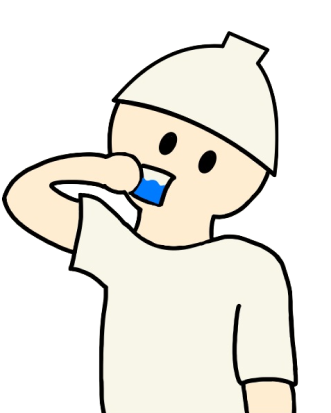

Nagoya × Sauna
Why?
「名古屋×サウナ」の訳

名古屋は東京・大阪間にあり、好立地です。そのため、急いで帰る必要がなく、たっぷりくつろいでから帰宅することができます。
サウナ・銭湯と湯上がり飯を済ませれば、家でやることは着替えだけ。旅の疲れはその日に癒し、楽しい思い出だけを持ち帰ることができます。

一覧
管理者イチ推しお風呂
心得
気持ちいい入浴のために
Point1
入浴前に水分補給
サウナの利用に関わらず、入浴中は汗をかきます。脱水症状を防ぐため、湯上がり飯をおいしく食べるためにも、しっかり水分を取りましょう。
Point1
入浴前に水分補給
サウナの利用に関わらず、入浴中は汗をかきます。脱水症状を防ぐため、湯上がり飯をおいしく食べるためにも、しっかり水分を取りましょう。
Point1
入浴前に水分補給
サウナの利用に関わらず、入浴中は汗をかきます。脱水症状を防ぐため、湯上がり飯をおいしく食べるためにも、しっかり水分を取りましょう。